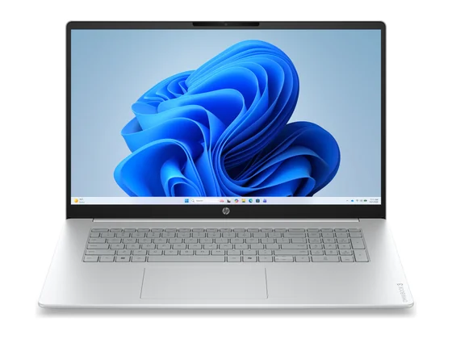
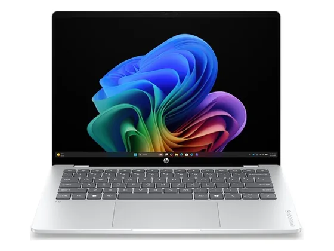
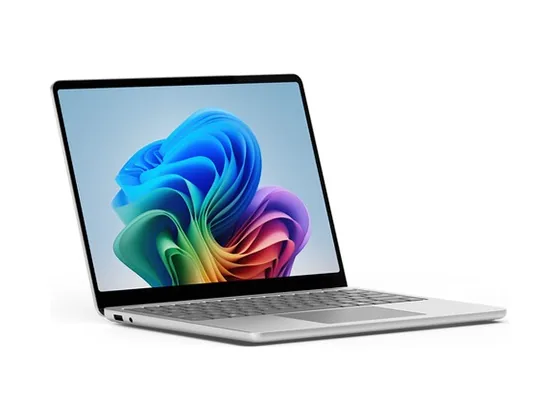
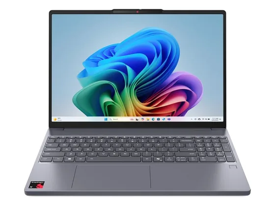

HP OmniBook 3 17 : avis, tests et prix
Le verdict en une phrase. Un 17 pouces sobre, endurant et peu bruyant pour la bureautique sur grand écran. Notebookcheck le juge bon (75 %), mais son processeur est dépassé et sa mémoire soudée.
N° 10 sur 10 dans le top 10 PC portables bureautique.

Pour qui ?
Vous voulez un grand écran de 17 pouces pour la bureautique et les vidéos, à prix contenu, sans vous soucier de la puissance.
Vous ouvrez beaucoup d'applications à la fois ou comptez garder le PC longtemps : processeur ancien, mémoire soudée.
Le consensus de la presse
Une seule note chiffrée à ce jour : 7,5/10, attribuée par Notebookcheck. À lire comme un avis isolé, pas comme un consensus. Dernier test relevé : mai 2026.
Où l'acheter
La configuration peut différer d'un marchand à l'autre : vérifiez la fiche avant d'acheter. Le prix Electro Dépôt est celui de son flux produits officiel à la date indiquée ; seul le prix affiché par le marchand fait foi. Seuls les liens Amazon et Electro Dépôt sont affiliés à ce jour ; les autres sont de simples liens directs. Aucun n'influence les notes ni le classement.
Tous les tests recensés
Chaque ligne renvoie vers le test d'origine. Les notes sont converties sur 10 ; « test » signale un article sans note chiffrée. Notre méthode.
Les alternatives pour le même usage
Tout le top 10 →
HP OmniBook 5 14Une autonomie de plusieurs jours et un écran OLED dans un châssis métal sobre : très bon en bureautique, limité dès qu'on lui demande de la puissance. N° 8 · Le plus soigné
Microsoft Surface Laptop 13"Petit, léger, très bien fini et toujours silencieux : un compagnon de travail agréable, mais vendu un peu cher pour son écran LCD. N° 9 · Le silencieux abordable
Lenovo IdeaPad Slim 3x 15Un 15 pouces qui ne chauffe pas, ne fait pas de bruit et tient très longtemps : bon choix pour la bureautique, avec un écran simplement correct.Questions fréquentes
Que pense la presse de l'ordinateur HP OmniBook 3 17 ?
La note presse moyenne est de 7,5/10, calculée sur 1 note. Un 17 pouces sobre, endurant et peu bruyant pour la bureautique sur grand écran. Notebookcheck le juge bon (75 %), mais son processeur est dépassé et sa mémoire soudée.
Quels sont les points faibles relevés par les tests ?
Processeur Ryzen 5 40 (génération Zen 2) dépassé ; Mémoire soudée : 8 Go sur la configuration vendue ; Clavier non rétroéclairé, couleurs ternes (62 % sRGB).
À qui s'adresse le modèle HP OmniBook 3 17 ?
Vous voulez un grand écran de 17 pouces pour la bureautique et les vidéos, à prix contenu, sans vous soucier de la puissance. À éviter si : vous ouvrez beaucoup d'applications à la fois ou comptez garder le PC longtemps : processeur ancien, mémoire soudée.
Où l'acheter, et à quel prix ?
Comptez environ 650 € (prix indicatif constaté en octobre 2026). Nous l'avons trouvé en vente chez Electro Dépôt. Les prix changent vite et la configuration peut différer d'un marchand à l'autre : seul le prix affiché par le marchand fait foi.